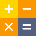

Referensi
PSB
Guru &
Pelajaran
Jadwal &
Kalender
Kesiswaan
Presensi
Penilaian
Kenaikan /Kelulusan
Mutasi
Laporan
Pengaturan
Your Name
Logout
Cetak Form Penilaian
Penilaian Pelajaran
 Perhitungan Nilai Rapor
Komentar Rapor
Nilai Rapor Siswa
Rata-rata RPP Setiap Kelas
Rata-rata RPP Setiap Siswa
Laporan Nilai Setiap Siswa
Rata-rata Nilai Setiap Siswa
Laporan Legger Nilai